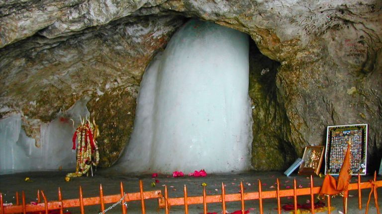
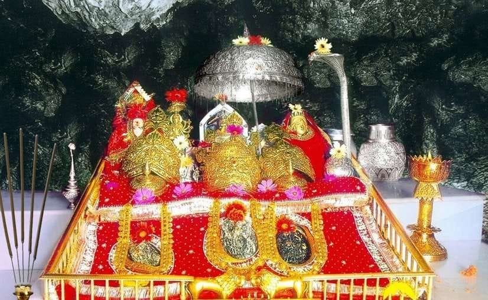
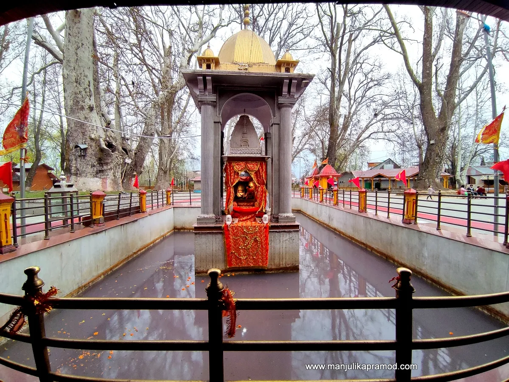
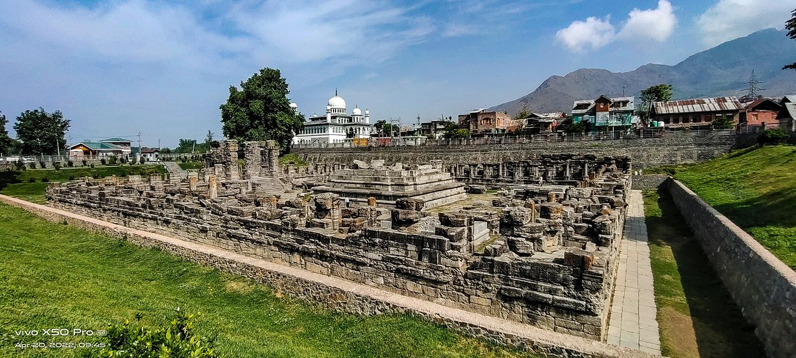
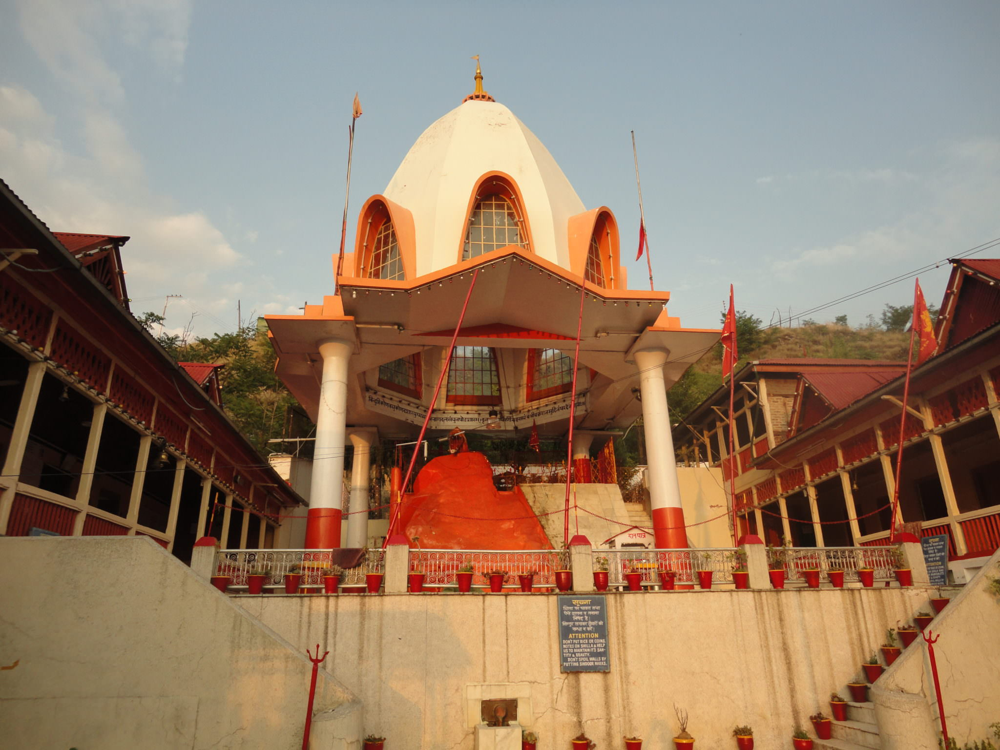
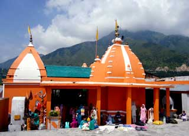

Temples and piligrims in Kashmir
Amarnath Pilgrimage

The Amarnath Cave is a sacred Hindu shrine located in Jammu and Kashmir, India, at 3,888 meters altitude, dedicated to Lord Shiva. It is famous for the natural ice Shiva Lingam (Baba Barfani), which forms annually.
- Significance: Lord Shiva revealed the Amar Katha to Goddess Parvati here.
- Pilgrimage: Amarnath Yatra takes place in July–August every year.
- Routes: Pahalgam and Baltal routes are used for trekking.
- Ice Lingam: Natural ice formation considered sacred.
Mata Vaishno Devi Pilgrimage

Mata Vaishno Devi Temple is located in the Trikuta Mountains of Jammu & Kashmir. It is one of the most visited Hindu pilgrimage sites in India.
- Location: Near Katra, Jammu.
- Deity: Manifestation of Kali, Lakshmi and Saraswati.
- Pilgrimage: 13 km trek to the shrine.
- Special Feature: Worshipped as three sacred rocks (Pindis).
🔗 More about Vaishno Devi Temple
Shankaracharya Temple
The Shankaracharya Temple is one of the oldest Shiva temples in Kashmir, located on Shankaracharya Hill overlooking Srinagar.
- Dedicated to Lord Shiva.
- Believed to date back to 200 BC.
- Located at a height of 1100 ft above Srinagar.
🔗 More about Shankaracharya Temple
Kheer Bhawani Temple

The Kheer Bhawani Temple is a famous Hindu temple dedicated to Goddess Ragnya Devi in Tulmulla, Kashmir.
- Famous for sacred spring that changes color.
- Major pilgrimage site for Kashmiri Pandits.
- Annual fair during Jyeshtha Ashtami.
🔗 More about Kheer Bhawani Temple
Avantiswami Temple

Avantiswami Temple is an ancient Hindu temple dedicated to Lord Vishnu located in Avantipora, Kashmir.
- Built by King Avantivarman in 9th century.
- Dedicated to Vishnu and Shiva.
- Now a protected archaeological pilgrimage site.
🔗 More about Avantiswami Temple
Sharika Devi Temple (Hari Parbat)

Sharika Devi Temple is located on Hari Parbat hill in Srinagar and is dedicated to Goddess Sharika, a form of Durga.
- Important Shakti Peetha in Kashmir.
- Located inside Hari Parbat Fort area.
- Major pilgrimage during Navratri.
🔗 More about Hari Parbat & Sharika Devi
Sudh Mahadev Temple

Sudh Mahadev Temple is a sacred Shiva temple located near Patnitop in Jammu region.
- Dedicated to Lord Shiva.
- Believed to be over 1200 years old.
- Natural Shivling present inside temple.